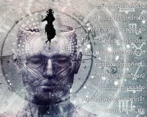

คนที่ขณะตายตั้งมั่นลมปราณชีวิตอยู่ระหว่างคิ้วทั้งสอง และด้วยพลังแห่งโยคะ พร้อมทั้งจิตใจที่ไม่เบี่ยงเบน ปฏิบัติการระลึกถึงองค์ภควานฺด้วยการอุทิศตนเสียสละอย่างสมบูรณ์นั้น แน่นอนว่าจะบรรลุถึงบุคลิกภาพสูงสุดแห่งพระเจ้า

โศลกนี้ได้กล่าวไว้อย่างชัดเจนว่าในขณะกำลังตายนั้นจิตใจต้องตั้งมั่นในการอุทิศตนเสียสละต่อบุคลิกภาพสูงสุดแห่งพระเจ้า สำหรับพวกที่ฝึกปฏิบัติโยคะได้แนะนำไว้ว่าให้กำหนดพลังแห่งชีวิตให้มาอยู่ระหว่างคิ้วทั้งสอง (ที่ อาชฺญา-จกฺร ) การปฏิบัติ ษฏฺ-จกฺร-โยค เกี่ยวเนื่องกับการทำสมาธิที่ จกฺร ทั้งหกซึ่งเกริ่นไว้ ณ ที่นี้ สาวกผู้บริสุทธิ์มิได้ฝึกปฏิบัติโยคะเช่นนี้ แต่เพราะท่านปฏิบัติในกฺฤษฺณจิตสำนึกอยู่เสมอขณะที่กำลังจะตายด้วยพระกรุณาธิคุณขององค์กฺฤษฺณจะทำให้สามารถระลึกถึงองค์ภควานฺได้ ดังจะอธิบายในโศลกสิบสี่
การใช้คำว่า โยค-พเลน มีความสำคัญในโศลกนี้ เพราะหากปราศจากการปฏิบัติโยคะไม่ว่าจะเป็น ษฏฺ-จกฺร-โยค หรือ ภกฺติ-โยค เราจะไม่สามารถไปถึงระดับทิพย์นี้ได้ในขณะที่กำลังจะตาย ขณะตายไม่มีใครสามารถระลึกถึงองค์ภควานฺขึ้นมาได้ในทันที เราจึงต้องฝึกปฏิบัติระบบโยคะบางอย่าง โดยเฉพาะระบบ ภกฺติ-โยค เนื่องจากจิตใจของเราขณะที่กำลังจะตายจะสับสนมาก เราจึงควรฝึกปฏิบัติวิถีทิพย์ผ่านระบบโยคะในระหว่างที่เรายังมีชีวิตอยู่